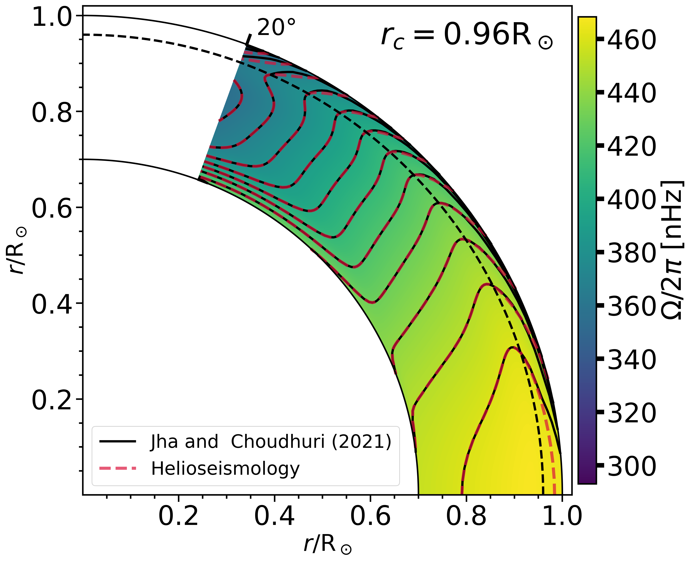

The First Theoretical Model of the Near-Surface Shear Layer of the Sun
It is well known that the Sun rotates differentially, i.e. its equator rotates faster than the pole. Not only at the surface, but the solar rotation profile also varies with the radius, which was discovered in helioseismic observation. This observation reveals an exciting feature close to the visible solar surface that the rotation profile of the Sun changes very sharply, which is named as Near-Surface Shear Layer (NSSL). In this work astronomers from ARIES and IISc have given the theoretical explanation for the existence of NSSL very the first time. They have used the thermal wind balance equation to explain the existence of NSSL.
The Sun, our life-giving star, has always been a star of many interests. Its importance for the living beings made many astronomers turn their telescope towards the Sun just after the advent of the telescope by Galileo Galilei. The early and regular observations of the Sun revealed the presence of dark spots, now known as sunspots, and 11 years of periodic variation in their number of appearances, popularly known as the solar cycle. The systematic observations of sunspots also show that the solar surface rotates differentially, which means the equator of the Sun spins faster than its pole. However, the internal rotation of the Sun has only been revealed after the helioseismology (technique of using sound waves to peek inside the Sun) era. Helioseismology has answered the many puzzling questions about the Sun while raising many questions about our nearest star at the same time. One of the crucial observations that helioseismology has made was the existence of the near-surface shear layer (NSSL). The NSSL is the region very close to the visible solar surface, where there is a sharp change in the rotation profile of the Sun. The understanding of NSSL is crucial for the Sun, but it will also help us understand the other stars. Many researchers had indicated the presence of such a layer in the past based on solar surface observations but the real inference has been provided only after helioseismic measurements.
Here in this work, researchers from ARIES, Nainital and IISc Bangalore have given the theoretical explanation for the existence of NSSL, for the very first time.
Their study used the thermal wind balance equation, which tells about how the slight difference in temperature between solar poles and equator, which is called thermal wind term, is balanced by the centrifugal force appearing due to solar differential rotation. Now, the question is, why are they expecting the solar pole to have a slightly higher temperature? To understand this, we have to think about the motion of plasma blobs or convective blobs in the solar convection zone in which heat is transported by convection in the same way as it is transported in boiling water. Unlike boiling water, the Sun is rotating, and hence the upward moving blobs will experience Coriolis force. The effect of Coriolis force is zero on blobs moving along the axis of rotation (as in the case of a pole) and will be maximum when they are moving perpendicular to it (as in the case of the equator). Therefore, the heat transfer will be more efficient along the axis of rotation, leading to a higher temperature near the pole which drives the plasma from pole to equator. Another term is called centrifugal, which arises due to solar differential rotation driving the plasma in the opposite direction that is equator to pole. The temperature profile of the Sun shows a sharp decrease near the visible surface and authors have shown that the pole-equator temperature difference also decreases as we approach the surface. To balance these effects Solar rotation profile (centrifugal term) has to change sharply, giving rise to NSSL.
Most scientists believe that this condition is valid only in the interior of the Sun, and it does not hold near the solar surface. In their work, the authors have shown that this belief actually holds near the surface as well. They have noted that if this condition is true near the solar surface it can explain the existence of NSSL which is inferred in helioseismology based observation.

Fig.: The solar rotation profile calculated based on the theoretical model given by Jha et al. (2021). The solid black and dashed red contours are the contours of constant angular rotation based on the model and observation, respectively.
Original paper: The First Theoretical Model of the Near-Surface Shear Layer of the Sun
First Author: Bibhuti Kumar Jha
Co-authors: Arnab Rai Choudhuri
First author’s Institution: Indian Institute of Astrophysics, Bangalore 560034, Karnataka, India;
Aryabhatta Research Institute of Observational Sciences, Nainital 263001, Uttarakhand, India;
Pondicherry University, Chinna Kalapet, Kalapet, Puducherry 605014, India